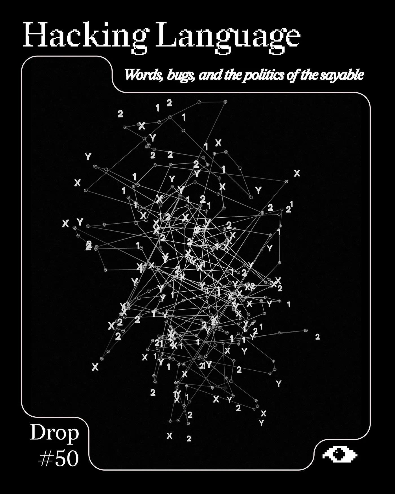
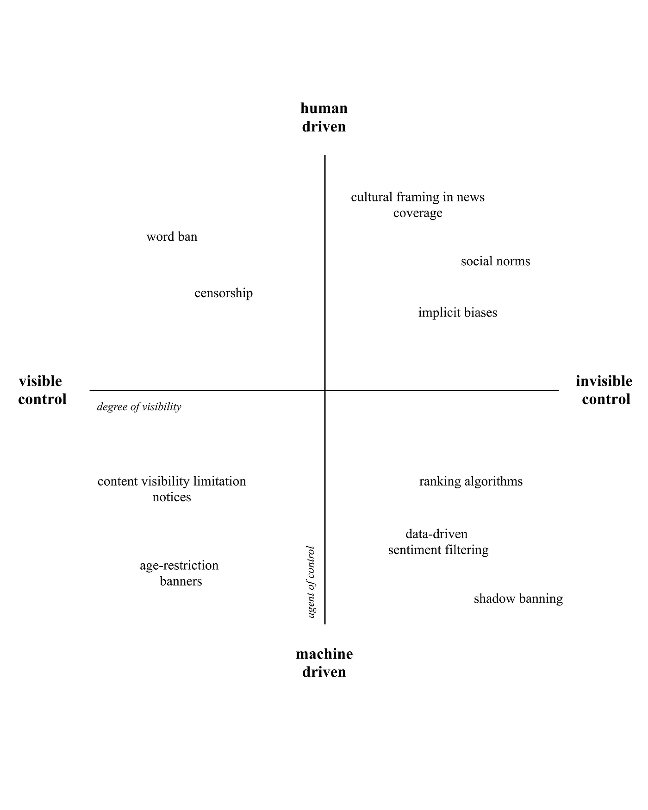
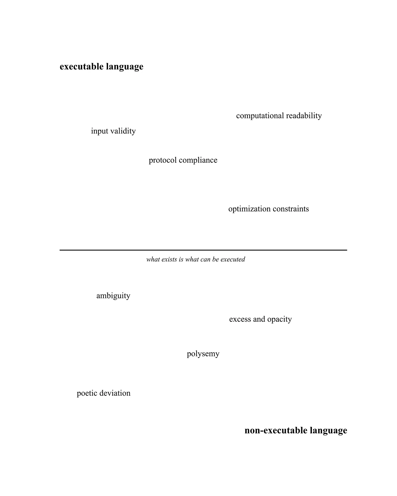

Drop #50 · May 25, 2026 · 10 min read
Hey everyone (▰˘◡˘▰)
For our fiftieth Drop (!), we are happy to share an excerpt from Martina Maccianti’s Hackerare il Linguaggio. Parole bug e politiche del dicibile (2026) published in Italian by Krisis Publishing (a great independent publisher).
"Language is not merely a tool for communication: it is the political infrastructure that defines what can exist and who deserves to be heard. In a world where words are being transformed into algorithmic functions, we risk becoming passive users of a code written by others. Maccianti issues a radical challenge: become hackers of our own language. The book democratizes the key concepts of contemporary linguistics, turning them into a shared toolkit for dismantling the 'cages of the sayable' that govern our digital present. Moving between computational metaphors and reflections on subjectivity, Hackerare il linguaggio leaves the boundaries of academia behind to build an open-source software in continuous evolution. An invitation to seek out the bug, to inhabit error, and to rediscover the value of the glitch as a space of freedom so that we can finally return to naming the future. Before someone else does it for us."
I find Martina's hacking-inspired approach fascinating, as well as the idea of conceiving a theoretical book as an active toolkit against the standardization of language. In the excerpt, she dissects the entanglement between language and computation, a gesture that is itself fundamental to any philosophical discussion of Large Language Models. Code has always been instantiated through language, a fact we forget too often, and generative AI models only represent the culmination of a long journey. Martina depicts this scenario here with sculptural clarity and mobilizes the central category of the protocol to describe this dynamic.
Martina Maccianti writes to examine the present and imagine possible futures. Her work treats language as a political space, exploring the relationship between words, power, and the construction of reality. Moving between philosophy and critical theory, she investigates the structures that determine what can be said, thought, and legitimised. In her research, desire, imagination, and utopia become tools for opening up new worldviews and seeking alternative spaces of existence.

Words today cannot be conceived outside the systems that compute them.
One of the most profound transformations of contemporary language concerns its shift from a vehicle of meaning to an operational function. Traditionally, words have been understood as signs that refer to a meaning, that is, symbolic entities structured within cultural and grammatical codes, whose function is to establish a relationship between thought and the world. In the current digital condition, this conception is progressively being replaced or, more precisely, overlaid by a different one, whereby words are no longer merely what they represent because they are also, and above all, what makes something happen within the system. This transformation can be better understood by examining how platforms, linguistic models, and computer systems treat language. In the computational context, every linguistic unit is interpreted as input, that is, an element to be processed according to predefined instructions, to be mapped onto a semantic database, to be associated with categories, patterns, risk classes, or priorities. In other words, language is treated as a function.
The term “function” in computer science indicates a block of code that, upon receiving an input, returns an output according to predefined logic. Applied to language, this concept implies a structural transformation in which words are instructions that produce a measurable effect within a system, and as such are not interpreted in the traditional hermeneutic sense (something to be understood), but rather as computable functions. This new configuration entails a mutation in the relationship between language and subject. If, in the humanistic perspective, the subject is the foundation of the linguistic act (the speaker determines the meaning), in the computational regime, the subject is reduced to a variable, because what matters is how the word is processed by the system. Meaning thus emerges from the technical processing of discourse. This shift has important epistemic and political consequences.
First, it imposes a new form of normativity in which only what is computable is recognized as valid. Ambiguous, deviant, opaque, or redundant expressions - everything that exceeds the function - is ignored, removed, or classified as an error. Second, it redefines the criteria of communicative efficiency. To speak well today means to adhere to a model of technical optimization, to be readable by automatic systems, compatible with engagement logics, accessible to algorithmic metrics. Language, from this perspective, becomes a technical-operational interface between the subject and the digital environment, and this defines an ontological change, transforming what a word is and how it can exist.
Words never articulate themselves in empty space, and, as we have already seen, speaking is a situated and conditioned act. In the contemporary digital context, the place where words are realized has undergone a radical transformation, shifting from being an abstract public space, a simple interpersonal interaction, to being a designed environment, constructed by technical rules, invisible protocols, and automated systems of filtering and distribution. It is in this sense that we can speak of architectures of the sayable, that is, a set of technical and normative devices that determine, often opaquely, what can be said, what is heard, what circulates and reproduces, what is excluded, penalized, or deactivated. These architectures do not operate in an explicitly coercive manner; they do not present themselves as prohibitions or censorship; rather, they act in a pre-critical and pre-discursive form, deciding in advance the criteria according to which words are recognized, processed, evaluated.
Digital platforms (e.g. social networks, search engines, generative language models, content management environments) function as semio-technical spaces, in which every linguistic content is subjected to a chain of automatic processes: moderation, classification, recommendation, monetization, penalization, statistical interpretation. For example, a post can be downgraded to lower visibility if it uses words deemed sensitive, a keyword can elevate a text in search results, or obscure it. These mechanisms do not directly eliminate what does not conform, but render it invisible, inaccessible, statistically irrelevant. The power of these architectures lies in their capacity to operate without exposing themselves: they do not openly impose what to say, but make it convenient, useful, profitable to articulate discourse in a certain way. The result is a language progressively adapted to the system’s metrics. Here, the distinction already introduced by the Foucauldian theory of power becomes useful, whose exercise does not need to prohibit, but simply to organize the space of the possible. In the context of language, this does not mean preventing speech, but defining what is worth saying, what will be heard, and what will have effect. This is the profound meaning of the architecture of the sayable, a space that pre-forms words before they are even uttered.

If speaking today means inhabiting an architecture of the sayable, it is inevitable to question what a word does once it enters the system, and therefore what technical function it activates.
Pragmatic linguistics, beginning with J.L. Austin, introduced a fundamental shift, establishing that language intervenes in the world. Speaking is always, to some extent, doing something with words. This insight shows how every linguistic act is constitutive of subjectivity and power. Words construct social positions, relationships, normative structures. In the contemporary digital context, this performative model undergoes a further transformation. The linguistic act continues to produce effects, but no longer (only) on the social, political, or subjective plane; its effects also manifest on the operational plane. Words today intervene directly in the systems that process the world. By activating a recommendation algorithm, modifying the ranking of a web page, determining an increase or loss of visibility. In all these cases, words are performative because they are executable, they produce functions, transformations, and results within an automated system. This shift marks the passage from a social performativity to a computational performativity.
In the classical paradigm, the linguistic act had a situated structure: it was embodied in a subject, an interlocutor, a context, a shared convention. The utterance had an effect because it was recognized as a valid act in a linguistic community. In the computational paradigm, the effect is linked to adherence to a set of technical conditions. A word “works” if it satisfies a binary logic; therefore, it is valid or invalid for processing, compatible or incompatible with a system. Computational performativity thus imposes a new rationality of language oriented toward operational functionality. Language becomes a sort of computable lingua franca, devoid of ambiguity, reduced to input-process-output. This transformation modifies the nature of the linguistic act and also the way in which the speaking subject is formed. Speaking becomes an optimized gesture, not an exploration of the possible. In this condition, what exceeds the function - the ambiguous, the opaque, the non-linear, the unexpected - is progressively marginalized. And with it, the space for linguistic forms that do not respond to the logic of efficiency is also reduced.
If words today are increasingly a computable act, it is necessary to question what the effects of this reconfiguration are on the very ontology of language and on what, therefore, can exist as a word in a system that recognizes only the executable. In the contemporary computational paradigm, language becomes a regulated technology, subject to operational logics that define its possibilities of existence. Speaking means activating a function within a system. And what can exist as a word, that is, what is recognized, computed, processed, is determined by the technical structure that hosts it. By the expression “operational ontology of language,” we mean to mark a profound transformation: the passage from a conception of language as symbolic space to a vision in which words are what can be technically executed, computable. Words become units compatible (or incompatible) with an operating system: what cannot be executed is excluded as an error, anomaly, or noise. In this sense, the category of executability assumes an ontological value in which only what is executable, that is, computable, is real within the system. Words are valid functions.
Alexander Galloway, in his work on the concept of protocol, shows how power in digital networks is not exercised through prohibition, but through the invisible structuring of operational possibilities. Protocol is the set of technical rules that make communication possible in digital environments. It is like a form of distributed government. A protocol establishes who can speak, how, where, according to which formats, and with what measurable effects. We are not facing censorship in the classical sense. There is no authority that explicitly prohibits certain discourses; there is an algorithmic design of the conditions of the sayable. Words can be uttered, but will not be read. They can be written, but will not be distributed. They can exist, but will not be recognized by the system. Protocol, in short, decides in advance what type of language is compatible with the technical environment, and therefore with the reality constructed by that environment.
If the ontology of language today is functional, executable, protocolled, how is it still possible to speak differently? How can one articulate an incompatible word, one that does not perform and does not produce immediate output?

Once the computational nature of current linguistic infrastructures is recognized, it becomes clear that the act of speaking, in the contemporary context, is configured as the input of data into a system designed for its processing, evaluation, and consequent execution or rejection. In such a scenario, any expression that does not adhere to this intrinsic logic is automatically qualified as ineffective, irrelevant, or unproductive. The threshold between language and silence is, therefore, defined by its internal computability.
Consequently, articulating a different discourse implies the adoption of a mode of thought and language that stands in direct opposition to its systemic executability.